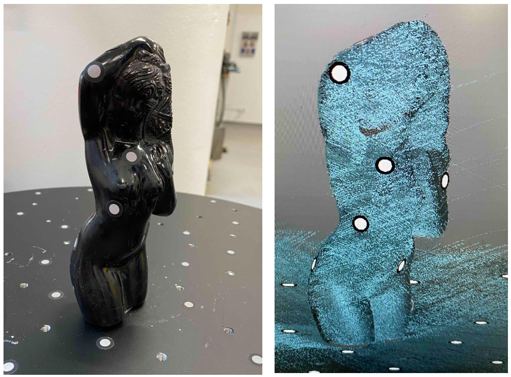
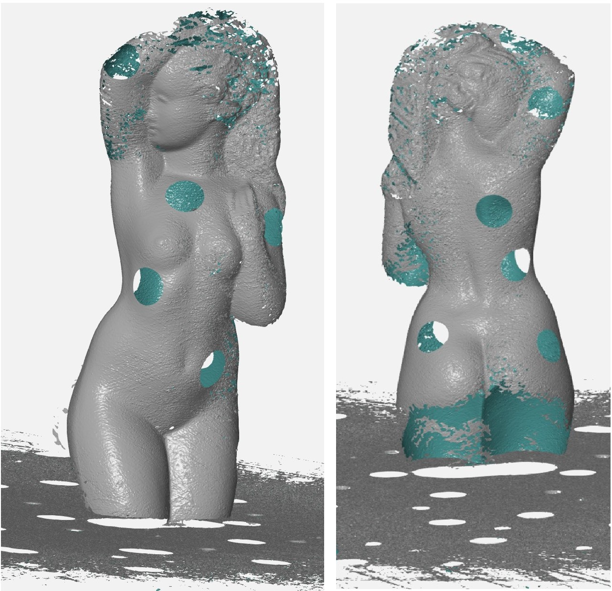
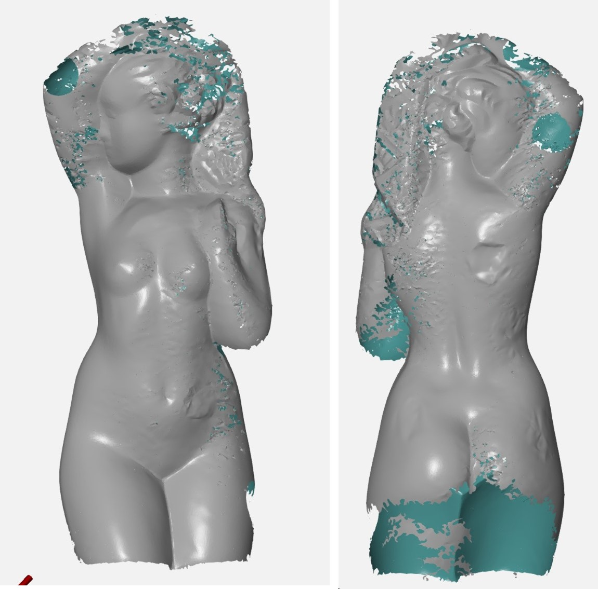
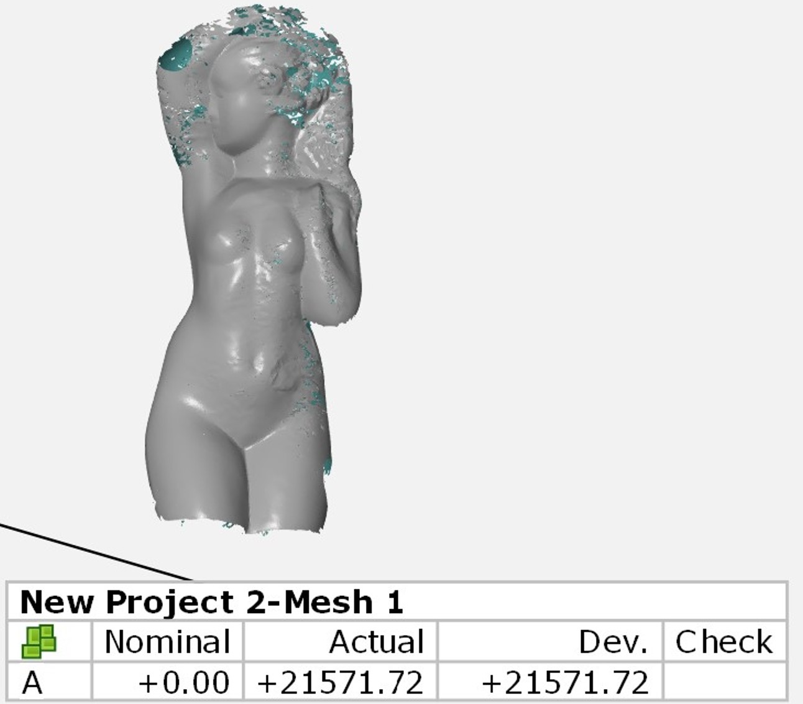
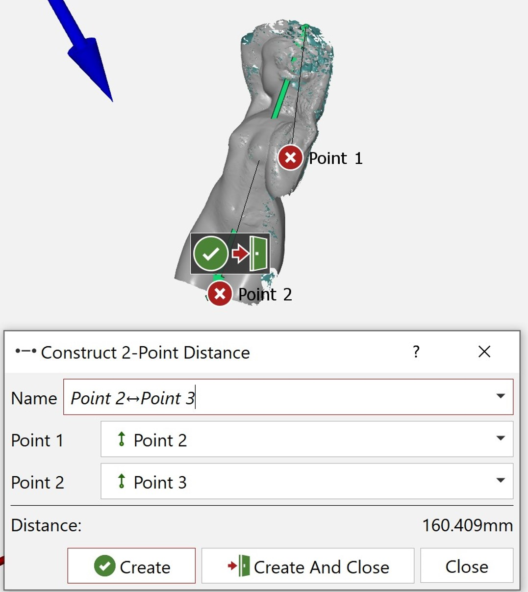
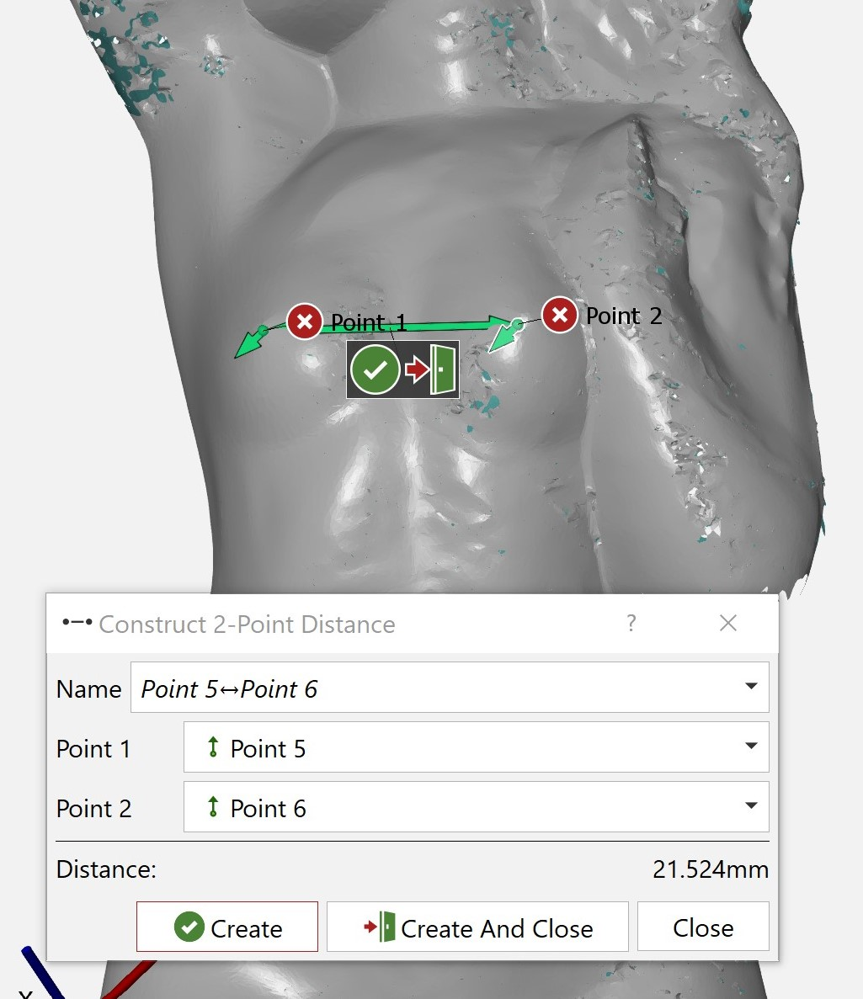

Úkol č.4
3D skenování
Mým cílem bylo naskenovat a dále upravit výslednou síť modelu číslo 7 (soška).
Nejprve jsem si přečetl celý postup skenování a následně jsem se pustil do práce. Nejprve jsem naskenoval kalibrační desku, aby si sken spočítal přesnost měření. Poté jsem ve stromu v programu zvolil atributy dle prezentace. Má soška byla leskle černá a poměrně malá. Na sošku jsem nalepil referenční body a položil ji na podložku. Nejprve jsem zkusil objekt naskenovat bez nanesení laku proti lesknutí. Sken byl tímto způsobem velice nepřesný a nevzešlo z něj nic použitelného. 
Pro druhý sken jsem nanesl lak proti lesku. Zde jsem si neuvědomil, že při nanášení laku se zastříkají i referenční body. Ty byly tedy potřeba následně obměnit.

Nastříkaný díl šlo naskenovat mnohem lépe. Udělal jsem dva celkové skeny, které jsem následně nechal sloučit do jednoho modelu. S výsledným modelem jsem byl poměrně spokojený. Špatně se naskenoval pouze vršek sošky, který byl poměrně tvarově složitý, a spodek sošky. Výsledný sken jsem si uložil ve formátu STL, abych byl schopen jej dále upravovat.

Následovalo upravování sítě. Nejprve jsem zadělal díry po referenčních bodech. Jednu díru jsem nebyl schopen zalepit, jelikož byla v místě, kde se soška špatně naskenovala. Poté jsem odřízl pozůstatky po rovině, na které stála má soška. Když už zbyl pouze model, tak jsem přešel na úpravu velikosti polygonů a vyhlatování. 
Dalším krokem bylo změřit obsah. Ten vyšel 21571,72 mm². 
Dále jsem změřil maximální výšky modelu. Jelikoš spodní i horní část nebyla dokonale naskenována, tak jsem opticky zvolil nejnižší a nejvyšší bod. Tyto body jsem následne změřil a vyšlo 160,4 mm. 
Pro libovolný rozměr jsem zvolil vzdálenost mezi bradavkami (odborně kozičková rozteč). Na obou koncích jsem vytvořil body, které jsem následně změřil. Tento rozměr byl 21,5 mm. 